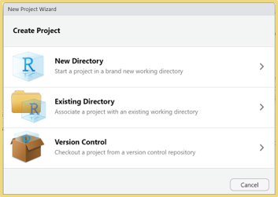

Probability And Business Statistics
1 Installing R and R Studio
1.0.1 Installing R on Windows
- Open an internet browser and go to https://www.r-project.org/.
- Click CRAN hyperlink underneath Download on the left.
- Select a CRAN location (a mirror site) and click the corresponding link. I selected O-cloud. This brings you to the following link: https://cloud.r-project.org/
- Click on the “Download R for Windows” link at the top of the page if you have a Windows computer.
- Click on the “install R for the first time” link at the top of the page.
- Click “Download R for Windows” and save the executable file somewhere on your computer.
- Run the .exe file
- Accept all defaults and follow the installation instructions
- Now that R is installed, you need to download and install RStudio.
1.0.2 Installing R on a Mac
- Open an internet browser and go to https://www.r-project.org/.
- Click CRAN hyperlink underneath Download on the left.
- Select a CRAN location (a mirror site) and click the corresponding link. I selected O-cloud. This brings you to the following link: https://cloud.r-project.org/
- Click on the “Download R for (Mac) OS X” link at the top of the page.
- Click on the file containing the latest version of R under “Files.”
- Save the .pkg file, double-click it to open, and follow the installation instructions.
- Accept the license agreement and all subsequent defaults
- When the installation completes, click Close.
- Now that R is installed, you need to download and install RStudio.
1.0.3 Downloading RStudio For Mac or PC
- Go to the following URL: https://posit.co/download/rstudio-desktop/.
- Click the Download button for Install RStudio.
- It should recognize your operating system. If you see different an Installers for Supported Platforms section, click the version that is appropriate for your operating system. When the download is complete, run the install program, accepting all defaults.
- Note, RStudio might conflict with some Mac antivirus programs. Ensure your antivirus is not blocking it from installing. Only worry about this if you have difficulty installing the program.
1.1 Take Your First Look at R
- On the right, two windows, each with tabs
- There are many ways to customize the look of RStudio for accessibility purposes with a couple being the following:
- You can resize the windows using the splitters.
- You can maximize/restore the windows within the left/right panels using the familiar Windows controls in the upper-right of each window.
- There are many ways to customize the look of RStudio for accessibility purposes with a couple being the following:
- On the left, the Console Window reproduces the R environment.
- Observe the command line with the \(>\) symbol.
1.2 Creating a Project for Our Class
- The RStudio project file is a file that sits in the root directory, with the extension .Rproj. When your RStudio session is running through the project file (.Rproj), the current working directory points to the root folder where that .Rproj file is saved.
- Open up R Studio and Let’s Take a look around.
- Start by creating a project for our class. Projects are great because they aid in your organization technique.
- You will find that some professors are not insistent on making a project for their class, but it is helpful to still do to organize your materials. You will have a lot of code in this class, so it is good practice to keep everything organized!
- To create a project click \(File > New Project - New Directory > New Project\) and save your project to a place on your computer (not the cloud).


1.3 R Script files (MyFirstRscript.R)
- Entering and running code at the R command line is effective and simple. However, each time you want to execute a set of commands, you have to re-enter them at the command line. Nothing saves for later.
- Complex commands are particularly difficult causing you to re-entering the code to fix any errors typographical or otherwise. Fortunately, you can make a .R script file to solve this issue.
- A .R script is simply a text file containing a set of commands and comments. The script can be saved and used later to rerun the code. The script can also be documented with comments and edited again and again to suit your needs.
- Create your first R Script file within your Project for testing purposes.
- Go to File > New File > R Script
- Save this file as MyFirstRscript.R in your project folder you just made. You should see this new file under Files like mine is in the bottom right panel. As we create new files, continue to save them into your project folder.
- On the .R file presented to the left, comments are added as denoted by the hashtag which you can type or push ctrl + shift + c.
- If you type in your console, it will not save it for later. However, if you save code in this R Script file, you can open your file at a later date to rerun your code. Also, as we move through the class, feel free to document all your notes in your .R file via # called comments. More on comments later.
1.4 Using R More Effectively
1.4.1 Setting Options to Your Liking
- You have many options to customize R Studio.
- Go to Tools > Global Options to see the list of options for you to customize.
- A few are listed below.
- You can set your general information including your default working directory (when not in a project).
- You can customize the appearance to a theme that accommodates your learning style and visual preferences.
- You can turn on a spell check.
Global Options.R" class="img-fluid figure-img">
1.4.2 Quick Keys in R
- There are a lot of quick keys in R to make you able to use it faster and more effectively. You may look over these and try on your own.
1.4.3 Getting Help in R
- There are lots of ways to get help in R.
- In R, use the help search box to find information on a function, parameter, or package.
- ?mean
- help.search(‘swirl’)
- help(package = ‘MASS’)
- ?install.packages
- You should try to look up the tapply command to see what it does.
- Use ?tapply in your .R file to pull up tapply() command or type tapply in the Help box. * Formally, you should see that the command applies a function to each cell of a ragged array, that is to each (non-empty) group of values given by a unique combination of the levels of certain factors. This means that the command does some math calculation (mean, sum, etc.) on a continuous variable after dividing the data by group.
- The format is tapply(x, index, and fun), where x is a continuous variable, index is a grouping variable or factor, and fun is a function like mean.
- More on that function later in the first lessons.
1.5 Accessing Data Files for the Course
- To download the data sets, go to our Blackboard datasets page and download them to your computer
- Once downloaded, unzip the file by right-clicking and selecting “Extract All”, and then move the subfolder named data to your working directory.
- In the example below, my project folder for the class is called BUAD231 and the subfolder that contains all the data files is called data. You can put your folder anywhere on the hard drive of your computer, but do not download it to places on the cloud like OneDrive.
- We will use a number of data files plus more for homework/projects, so be prepared to use these files throughout the class.
1.6 Summary
- At the end of this section, you should have downloaded and browsed R in RStudio. You should have looked at the quick keys in R to make editing your R documents easier. You should set up a project folder for the course where you want to on your computer, and made your first .R script file located in that project folder. You should have tried a line of code or two as presented. Finally, you should have looked around the RStudio environment and found the help tab.